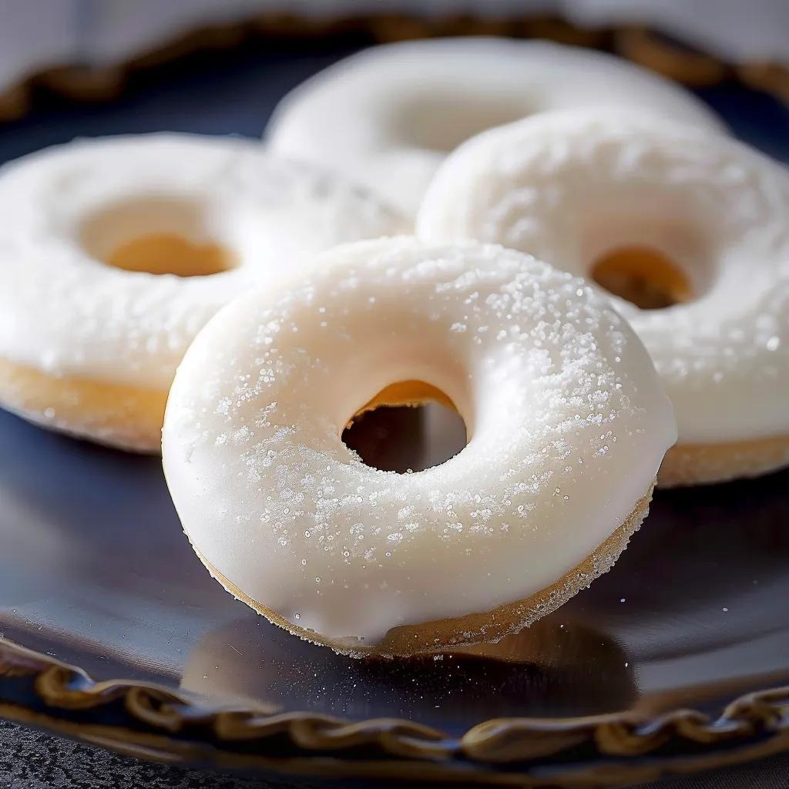

Les rousquilles
catalanes


⟹ Recette sucrée ⟸
Un anneau tendre, une couche de glaçage blanc comme la neige du Canigou, un parfum de citron ou d'anis. La rousquille est le biscuit le plus typique du Roussillon, celui que l'on offre aux amis et que l'on rapporte du Vallespir dans sa valise.
Le mot vient du catalan et de l'espagnol rosca, la couronne, ou rosquilla, la petite roue : il décrit la forme d'anneau du biscuit. Au Moyen Âge, on fabriquait déjà de ces couronnes parfumées à l'anis et à la fleur d'oranger. Sur les marchés et les foires des deux côtés des Pyrénées, des marchands les vendaient enfilées sur de longs bâtons, qu'ils portaient sur l'épaule ou tendaient jusqu'aux fenêtres des clients.
La recette est restée pratiquement la même de part et d'autre de la frontière. Mais c'est dans la vallée du Vallespir, entre Céret, Amélie-les-Bains, Arles-sur-Tech et Le Perthus, que la rousquille est devenue ce qu'elle est aujourd'hui.

Vers 1810, un pâtissier d'Amélie-les-Bains, Séguela, a l'idée de recouvrir les couronnes d'un glaçage de sucre blanc. Le glaçage protège la pâte, qui reste tendre plus longtemps. Quelques décennies plus tard, la pâtisserie Touron, à Arles-sur-Tech, remplace l'anis par le citron : la rousquille moderne est née. Les deux parfums coexistent toujours.
Encore aujourd'hui, chez les artisans, le glaçage est versé et lissé à la main sur chaque rousquille, jusqu'à combler le trou du milieu.
La rousquille est aujourd'hui produite à grande échelle par des industriels. Mais selon Slow Food, qui l'a inscrite à son Arche du goût, il ne reste qu'une poignée d'artisans pour faire la version traditionnelle, tendre et sucrée, bien différente des versions industrielles, plus sèches. Une rousquille artisanale mesure environ 7 cm de diamètre et pèse de 25 à 40 grammes. On la mange au petit-déjeuner, avec le thé, en dessert ou avec un verre de vin doux.
Le glaçage sucré, le citron et l'anis demandent un vin doux, mais vif. Les vins doux naturels du Roussillon, servis par tradition avec les rousquilles, sont l'accord évident.
Muscat de Rivesaltes
AOP · Pyrénées-Orientales (66)
Fleurs blanches, agrumes, fruits exotiques : la fraîcheur du muscat répond au citron du glaçage. C'est l'accord de tradition en Roussillon.
Banyuls rimage
AOP Banyuls · Pyrénées-Orientales (66)
Un vin doux naturel rouge et jeune, aux arômes de fruits rouges et de cerise : un contraste gourmand avec le biscuit blanc.
Rivesaltes ambré
AOP · Pyrénées-Orientales (66)
Noix, fruits secs et miel : il s'accorde avec les rousquilles à l'anis.
Crémant de Limoux
AOP · Aude (11)
Brut et fin, il équilibre le sucre du glaçage, pour une rousquille à l'apéritif ou au goûter.
Rosca, la couronne ; rosquilla, la petite roue : le nom de la rousquille décrit simplement sa forme.
Autrefois, les couronnes étaient enfilées sur de longs bâtons que les marchands portaient sur l'épaule, de foire en foire.
La rousquille du Vallespir figure sur l'Arche du goût de Slow Food, qui recense les produits traditionnels menacés de disparition.
Une légende attribue l'idée du glaçage à un cuisinier de la reine Marie-Barbara du Portugal. L'histoire retient plutôt le nom de Séguela.